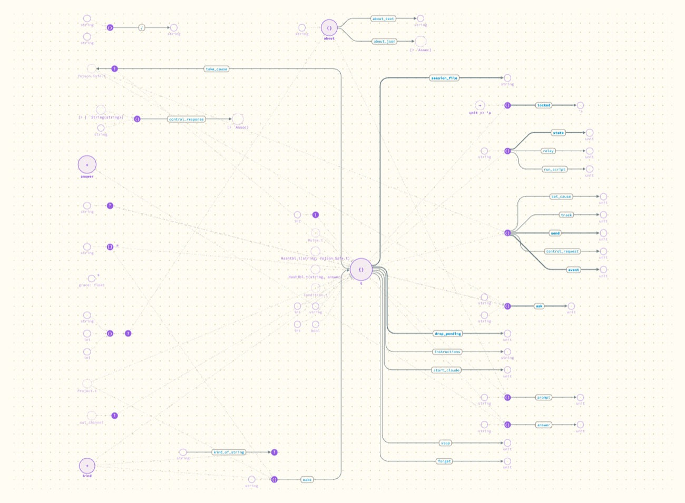
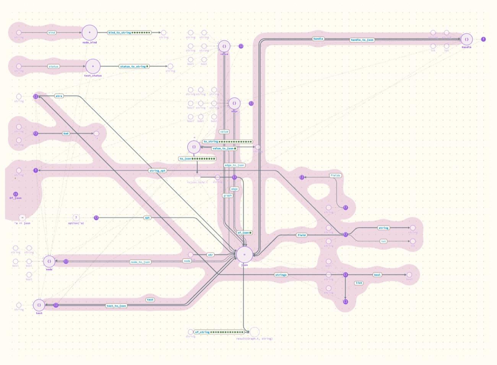

Which layouts and edge styles make a real module readable?
Of ten layouts and four edge styles now switchable in the page, one pairing reads clearly better on existing code: the ledger layout with metro edges. Nothing tried yet fixes a module of a hundred definitions.
- Why
Real modules drew as scattered islands with labels too small to read, or as a tangle (entries 1 and 2). Andrew asked for several quite different ways of placing nodes and of drawing edges, railroad styles among them, to try on real code.
- What was done
-
A helper agent read Hazel's earlier layout research and concept rounds, exposed the six experimental layouts that came over with Hazel's canvas but could not be reached, and added three layouts and two edge styles. Each was shot on three of Portolan's modules and judged from the pictures. The full set is in the layout options study.
I then looked at the pairing it rated best on the merged build, with the shorter labels from entry 4.
What happened

Agent as it drew this morning.
t is a row leaving it, in source order, ending at its result.Ledger gives each shared type a lane and each function a row, so a signature can be read off a row and the order is the file's order. Metro draws arrows as level runs with short diagonals, with arrows that share a route running side by side. Together the board fills and the labels are large enough to read.

Graph: functions between two shared types make long trunk routes across the lanes, and a submodule's region smears along them.| Option | Verdict from the pictures |
|---|---|
| Ledger (new) | The most readable for existing code. Bad at functions between two shared types, and it re-places everything when a function is added. |
| Compact (new) | Closes up the islands on small modules; a wash on tangled ones. |
| Clusters (new) | The same grouping on arcs. Not better than ledger. |
| The six from Hazel's lab | All work. None changes what is hard about a real module. |
| Metro edges (new) | Best with ledger. Does not route around nodes. |
| Straight edges (new), circuit edges | Usable; no clear gain over curves. |
Cost. The same work found why layout was slow: up to four full placements per redraw, and list searches inside loops. Picking the whole project (about 1,850 nodes) went from 183 seconds in layout to 2.4. A 209-node module went from 522 ms to 28.
- What it means
-
For reading code that already exists, source order and one row per function beat a layered graph. The layered layout was built for watching a small program grow, where stability of place matters more.
The new layouts place everything from scratch, so they have not earned that use: none has been watched through an agent's run or dragged by hand.
- Not tried
The two outside layout engines Hazel's lab can call (ELK and CoLa) need about 1.5 MB of extra script. Ties, from Spall: a point that chosen arrows share and slide through, which would be the first manual layout for arrows, and which reads as a tuple of functions.
- Next
Andrew tries them. Open questions: whether ledger with metro should be the default for existing code, with layered kept for agent runs; whether the regions of submodules should follow rows instead of routes.